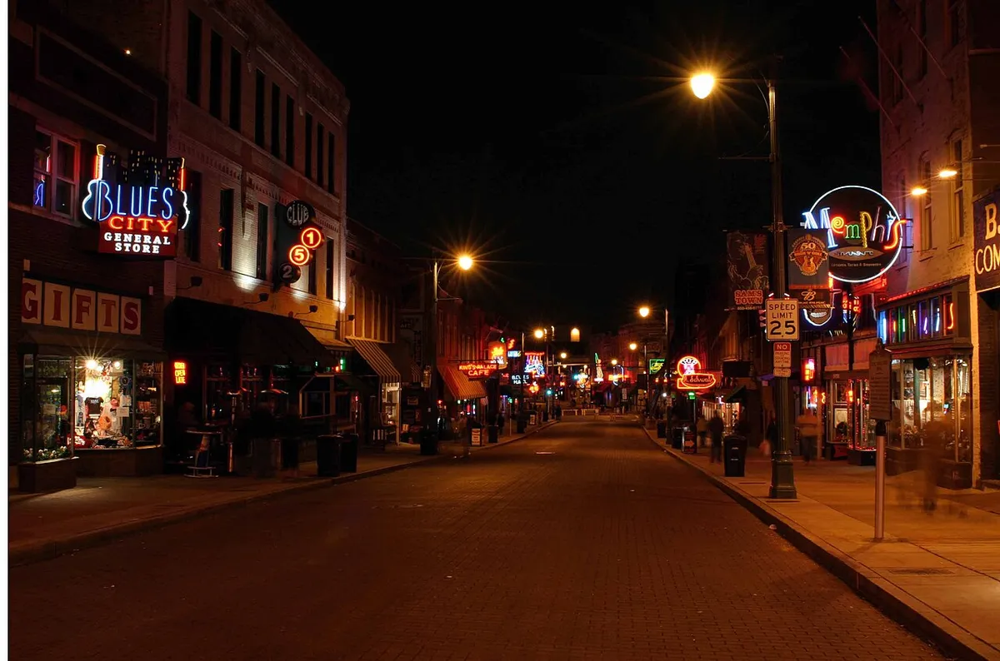
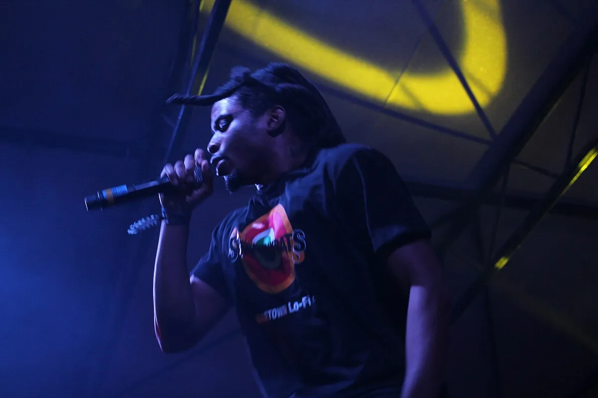
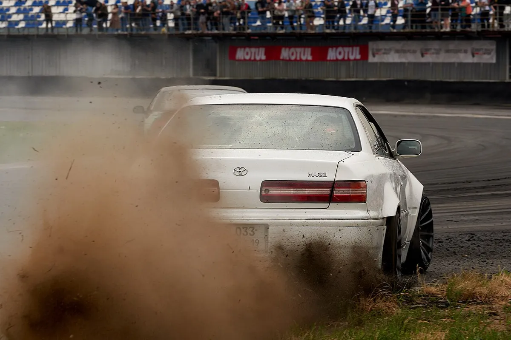
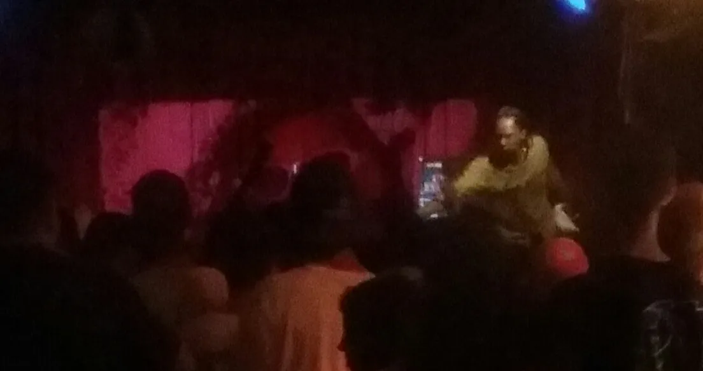
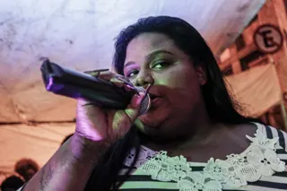

Phonk
What is phonk? Phonk music, its meaning, drift phonk and the songs
Memphis rap tapes, slowed and screwed, renamed on SoundCloud in 2012, then sped up in Russia and set to drifting cars: the two lives of phonk.
Two lives.
Phonk has two lives. The first began in the early 2010s, when SpaceGhostPurrp and his Raider Klan collective went back to the Memphis rap of the 1990s and built a sound out of it. The second began in Russia at the end of the 2010s and reached everyone who has watched a car drift sideways in a short video.

The two halves share a name and some sounds, and not much else. As drift phonk overtook the original in popularity, the word itself came to mean the drift style first. Epidemic Sound's guide to the genre puts it more bluntly: old-school phonk-heads are quick to dismiss drift phonk, because it shares little of phonk's Southern hip-hop roots. After drift phonk, the name moved once more, to a Brazilian funk style.
What phonk music sounds like.
Phonk music is dark, slow and grainy. It is usually described as Memphis rap vocals over chopped and screwed production, with samples from early 1990s hip hop, often mixed with jazz and funk. Chopping and screwing, slowing a record down and cutting it up, is there to make the sound darker.
Much of that texture comes from the tapes it borrows from. Epidemic Sound points out that the Memphis artists were dubbing and redubbing to tape, which gave the music a nostalgic, fuzzy feel.
Crack Magazine's review of SpaceGhostPurrp's 2012 album described its tracks as saturated with "a cold moisture and metallic echo". "Been Fweago", one of the cuts that review named, is a good place to hear it.
Drift phonk changed the recipe: high bass, TR-808 cowbells and distortion heavy enough to make the sampled lyrics hard to make out, at faster tempos than the original style. The Conversation's 2024 piece on the genre hears down-tempo hip-hop, menacing bass, distorted drums and plucky synths, with parts taken from EDM, metal and dubstep.
What phonk means.
The phonk meaning is in the spelling: it is funk, spelled the way SpaceGhostPurrp spelled it. He explained in an interview that "phonk is slang for funk", a nod to G-funk. Epidemic Sound adds that he grew up on 1990s G-funk in Miami.
In a 2012 interview with Okayplayer he described the word as a name for how his music sounds, and talked about records that "got a phonky tone to it, as they used to say in the old days". That is why, he said, he calls it Mysterious Phonk.
The word ran through his track titles: "Pheel tha Phonk", "Bringin' tha Phonk" and "Keep Bringin' tha Phonk", alongside the album.
Where phonk came from.
Phonk starts in the Southern United States in the 1990s. The artists usually credited with laying its foundations, many years before anyone used the word, are DJ Screw, X-Raided, DJ Spanish Fly, Tommy Wright III, DJ Squeeky and the Memphis collective Three 6 Mafia. Houston's chopped and screwed sound, DJ Screw's slowed-down mixtapes, is generally counted as the genre's precursor.
The Conversation traces the same line. Its authors write that DJ Screw, a hip-hop DJ from Texas, first championed the palette of sounds phonk would use, in his mixtapes. Epidemic Sound dates phonk as a hip-hop subgenre established in the 1990s and popularised some twenty years later.
Tommy Wright III is one of the Memphis rappers named among phonk's influences. In 2026 Boiler Room filmed him at Willie Mitchell's studio in Memphis for a session called The Legends of Memphis Rap.
SpaceGhostPurrp and Raider Klan
The revival came in the early 2010s. SpaceGhostPurrp's collective Raider Klan, with Amber London, Denzel Curry and Xavier Wulf among its members, brought the Memphis rap sound back, along with the rapper Lil Ugly Mane and the producer DJ Smokey. That revival is what grew into the phonk style.

SpaceGhostPurrp's first official album, Mysterious Phonk: The Chronicles of SpaceGhostPurrp, came out on the independent label 4AD.
Crack Magazine's reviewer credited him as the creator of a unique and bizarre sound, while noting that his influences were loudly pronounced. In his Okayplayer interview he said people heard Memphis and Houston in it, but that his music showed "how that raw Miami gutter sound really sounds".
Rare phonk and SoundCloud.
Phonk never had a home city. It grew on SoundCloud rather than in a regional scene, and between 2016 and 2018 it was one of the most listened genres on the platform, with #phonk among its most trending hashtags each year. Ryan Celsius, a music curator, helped popularise it through his YouTube mixes.
By the end of 2017 the sound had moved on from its "gritty, dark, Memphis-oriented" start towards modern vocals and elements of jazz and classic hip hop. Celsius called this stream "rare phonk", with "more of a cleaner, almost mainstream trap sound". DJ Yung Vamp, Soudiere and DJ Smokey are usually named as its pioneers, with trap drum programming under Memphis percussion and vocal samples.
DJ Smokey, Nuke Radio's CEO, played the main stage of Boiler Room's Los Angeles showcase.
Drift phonk.
What is drift phonk? It is the faster, louder style that most people now mean by the word. Epidemic Sound and most accounts place its start in Russia in the late 2010s; The Conversation places it in the early 2020s. Most of its prominent producers come from Russia, Ukraine, Belarus and elsewhere in Eastern Europe.

The name comes from the videos. The Conversation says it was named for the pairing of the music with TikTok clips of drift car racing, and the style turns up just as often under weight lifting, football, anime, fighting sports and street racing. The songs are short and energetic, which suits all of them.
One of the first drift phonk songs is "Scary Garry", released by Kaito Shoma in 2016.
This is the aggressive phonk most listeners meet first: high bass, cowbells, and distortion pushed until the vocal samples blur. Epidemic Sound says drift phonk put more weight on thick basslines, higher tempos and slick production, and that it overtook the core subgenre on TikTok and YouTube.
The style's biggest name is Kordhell, the stage name of Mick Kenney. Best known for "Murder in My Mind", he is recognised as the first phonk producer to break into Spotify's top 500 most popular artists, and Epidemic Sound notes his roots in extreme grindcore.
Brazilian phonk.
Brazilian phonk is the next name the genre took, and the label is not quite right. The music known abroad as Brazilian phonk is funk automotivo, a subgenre of Brazilian funk that picked up the nickname after it took off on social media, and by the mid-2020s the two names were widely treated as one. Epidemic Sound describes it as Brazilian funk mixed with drift phonk.
So the roots of Brazilian phonk are in São Paulo's funk scene rather than in Memphis. This site's guide to Brazilian funk covers where it came from, including the automotivo record that topped Spotify in Ukraine in 2023.
A "Japanese funk" followed in the early 2020s, made mostly outside Japan, mixing J-pop, anime music and city pop with baile funk, often with AI vocals. "Montagem Hikari", by the Philippines-based BellyJay, had 14 million views on YouTube and 26 million plays on Spotify by April 2026.
Why phonk got so popular.
Short video did most of it. Drift phonk gained traction on TikTok in 2020, and after the style took off in Russia, Spotify launched its official curated phonk playlist in May 2021, almost entirely drift phonk. The sound became a fixture of doomscrolling across YouTube Shorts, TikTok and Instagram Reels.
The Conversation's authors argue that a global crisis, drift racing and Memphis hip-hop together made phonk the soundtrack of the TikTok generation. Drift phonk even reached the Fast and Furious franchise, with the release of Drift Tape (Phonk Vol 1). They also argue that its distorted, aggressive sound speaks to young listeners dealing with anxiety, and note that it is often caught up in complaints about shrinking attention spans.
Its success split the audience. Older fans of the Memphis-based sound tend to dismiss the drift style, while the original style has carried on underground. Kieran Press-Reynolds, writing in Pitchfork, names Freddie Dredd and Suicideboys as artists still making songs in phonk's first style.
The best phonk songs.
There is no agreed chart of the best phonk songs. These are the records the sources name, from the Memphis-built originals to the popular phonk songs of the TikTok era.
- SpaceGhostPurrp, "Pheel tha Phonk": from the run of songs that carried the word in the title.
- SpaceGhostPurrp, "Bringin' tha Phonk": the same run, from the Raider Klan years.
- SpaceGhostPurrp, "Been Fweago": from Mysterious Phonk, his 2012 album on 4AD, and named in Crack's review.
- Kaito Shoma, "Scary Garry" (2016): one of the first drift phonk songs.
- Kordhell, "Murder in My Mind": the single he is best known for.
- Interworld, "Metamorphosis": the single that Ivan Belozerov, from Russia, is known for.
- DXRK, "Rave": the single that Tahar Bendjedi, from Algeria, is known for.
- BellyJay, "Montagem Hikari": the Japanese funk offshoot, at 26 million Spotify plays.
Phonk artists.
The phonk artists named in the sources fall into four groups.
The 1990s foundations: Three 6 Mafia, Tommy Wright III, DJ Spanish Fly, DJ Squeeky and X-Raided, with Houston's DJ Screw as the precursor. Their records and tapes are what phonk samples.

The revival and rare phonk: SpaceGhostPurrp, who named it; Raider Klan's Denzel Curry, Xavier Wulf and Amber London; Lil Ugly Mane; DJ Smokey, DJ Yung Vamp, Soudiere and Mythic, the names of "new-age phonk"; and Ryan Celsius, who spread it through his YouTube mixes.
The original style today: Suicideboys and Freddie Dredd, still making songs in phonk's first style.
Drift phonk: Kaito Shoma, Kordhell, Interworld and DXRK. Who is the most famous phonk artist depends on which phonk you mean. In drift phonk, the name most often given is Kordhell.
Where to start with phonk.
Start where the word started. SpaceGhostPurrp's Mysterious Phonk shows what phonk meant in 2012, and Tommy Wright III's Boiler Room session shows where it came from. Then play "Scary Garry" and "Murder in My Mind" back to back to hear how far the drift style moved from them.
For the Brazilian side, start with the Brazilian funk guide.
Phonk FAQ.
What is phonk music?
Phonk music is a subgenre of hip hop from the early 2010s, built on samples, vocals and the chopped and screwed production of 1990s Memphis rap, often with jazz and funk samples. Today the name also covers drift phonk, a faster, cowbell-heavy style from Russia.
Why is it called phonk?
SpaceGhostPurrp, who coined the word, explained that "phonk is slang for funk", in reference to G-funk. He used it in track titles such as "Pheel tha Phonk" and on his 2012 album Mysterious Phonk.
Who invented phonk?
SpaceGhostPurrp coined and popularised the name in the early 2010s, with his collective Raider Klan, Lil Ugly Mane and DJ Smokey reviving the Memphis rap sound it grew from. The sound itself goes back to 1990s Southern artists such as Three 6 Mafia, Tommy Wright III and DJ Spanish Fly, and to Houston's DJ Screw.
Is phonk rap?
Yes. Phonk is a subgenre of hip hop, and early phonk rap drew directly on Memphis rap vocals and samples. Drift phonk, the later style, often reduces the vocals to distorted samples.
What is drift phonk?
Drift phonk is a subgenre of phonk that emerged in Russia in the late 2010s, with faster tempos, TR-808 cowbells, heavy bass and distortion. It is named after the TikTok videos of drift car racing it was paired with, and it became the most popular form of phonk.
What is Brazilian phonk?
Brazilian phonk is the name used outside Brazil for funk automotivo, a subgenre of Brazilian funk. Epidemic Sound describes the music as Brazilian funk mixed with drift phonk.
Who is the most famous phonk artist?
SpaceGhostPurrp is the name most tied to the original style, since he coined the word. In drift phonk it is usually Kordhell, recognised as the first phonk producer in Spotify's top 500 most popular artists.
Why is phonk so popular?
Drift phonk took off on TikTok in 2020, paired with short videos of drifting cars, gym sessions and football. Spotify launched an official phonk playlist in May 2021, and the sound became a fixture of short-video feeds on TikTok, YouTube Shorts and Instagram Reels.
Sources.
Continue reading
Read next.

Music history~12 min readWhat Is Brazilian Funk? Baile Funk, Funk Carioca and Songs
An MC, a DJ and a loud sound system: where funk carioca came from, what a baile funk is, the styles, the biggest songs and the artists.
Read article → Music history~27 min read
Music history~27 min readThe Evolution of UK Electronic Music
Ten sounds that travelled from regional underground scenes into global culture.
Read article → Music history~11 min read
Music history~11 min readGerman Electronic Music History: From Kraftwerk to Techno
Cologne studios, Düsseldorf electronic pop, Frankfurt trance and the Detroit-Berlin alliance.
Read article → Music history~14 min read
Music history~14 min readWhat Is House Music? History, Sound and Chicago Origins
Frankie Knuckles, the Warehouse and the first Chicago records: what house music is, why it is called house, and the styles from deep house to afro house.
Read article →Want something to play while you read? Let the Selector pick a DJ set.